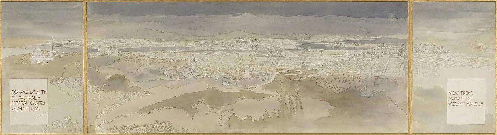

Where tenders live
Every official portal, the words in the notices, and a free memo on any tender you find.
Nine official portals
Most let you browse for free. You need a free account to download the documents and to be told about changes, so register on the ones you bid through.
AusTenderFederal. Commonwealth agencies. Closing times in ACT local time.
buy.nswNew South Wales. NSW Government agencies.
Buying for VictoriaVictoria. Victorian departments and agencies.
QTendersQueensland. No daylight saving in Queensland.
Tenders WAWestern Australia. Three hours behind Canberra in summer.
SA Tenders and ContractsSouth Australia. South Australian Government.
Tasmanian Government TendersTasmania. Tasmanian Government.
ACT Government TendersACT. ACT Government directorates.
Tenders OnlineNorthern Territory. Quotes and tenders from the NT Government.
Why no list of open tenders here? AusTender's terms don't allow its notices to be copied onto other sites, so we send you to the official portals instead. We are not connected with any of them.

Words you'll meet
- ATM
- Approach to market: AusTender's name for any tender notice.
- RFT
- Request for tender: a full bid, with written answers, pricing and documents.
- RFQ
- Request for quote: usually smaller and faster, and often won on price.
- EOI or ROI
- Expression or registration of interest. Often stage one; only the shortlist is invited to tender.
- Panel or standing offer
- A list of approved suppliers that agencies buy from for years. Miss the panel and you wait for the next one.
- Conditions for participation
- The must-haves. Fail one and the bid is excluded before it is scored.
- Addenda
- Changes to the documents after release. Register on the portal so you are told.
- Closing time
- Late bids are generally refused. Lodge a few hours early and keep the receipt.
Found one? Send it
Paste the link from any of the nine portals. The bid/no-bid memo comes back by email, free.
- Every condition for participation checked
- The criteria and their weights
- The closing time on your own clock
- Our call, bid or don't, and why